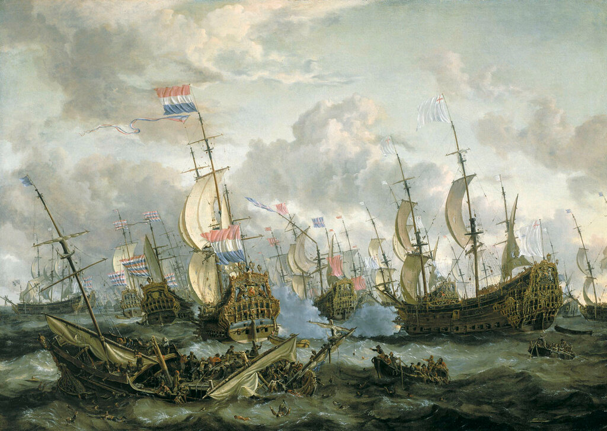
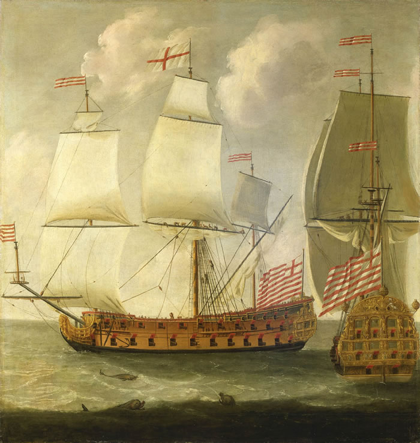
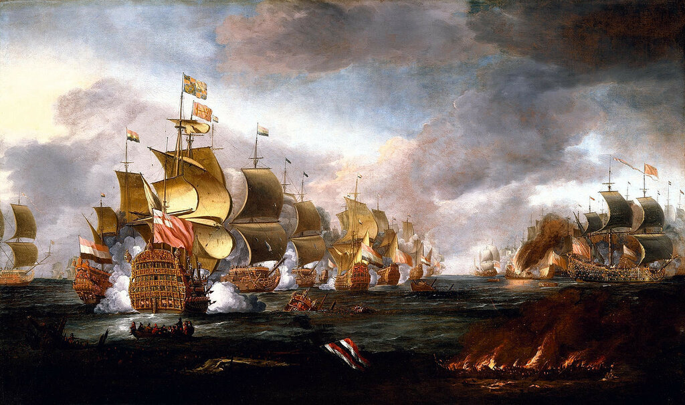
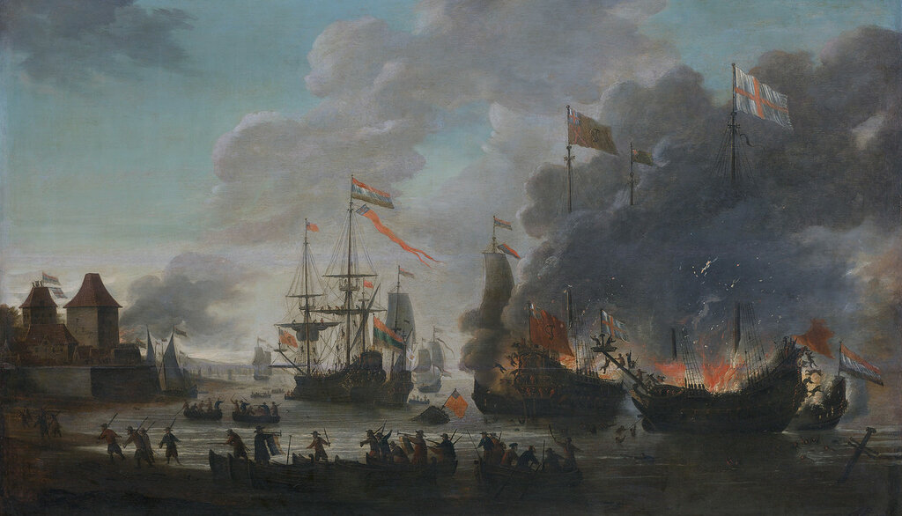

Купеческие корабли для военного флота
Ах, не плыть, ах не плыть кораблю,
Если нет капитана на нем…
Е. И. Дмитриева
Ранее мы вплотную подошли к эпохе Реставрации монархии в Англии и периоду правления Карла II. Начавшаяся в 1665 году Вторая англо-голланднская война дает повод для изучения другого интересующего нас вопроса – мобилизации гражданских судов для нужд военно-морского флота Англии и принципов назначения на них капитанов. Пока это не связано, вроде бы, с нашей конкретной темой, но не будем забывать, что в итоге мы должны прийти к событиям у Западных берегов Африки в конце XVIII века. А там арендованные корабли составляли существенную часть флота работорговцев.

Abraham Storck, 'Royal Prince' и другие корабли в Четырехдневном сражении 1-4 июня 1666 года. National Maritime Museum, Гринвич, Лондон.
Именно в ходе Второй англо-голланднской войны англичане, пожалуй, в последний раз, в больших масштабах использовали в составе своего флота арендованные у торгового флота суда. Поэтому удобно рассмотреть анатомию процесса именно на этом примере.
Война началась вследствие стремления Карла II сместить Нидерланды с господствующих позиций в мировой торговле. И первые военные провокации английский флот устроил с помощью своих кораблей, находившихся под флагом торговых компаний у западных берегов Африки. Как известно, торговые интересы Англии в тот период зачастую обслуживались силами кораблей и за счет средств английского военно-морского флота. В начале 1664 года английские военные корабли, находившиеся у побережья Западной Африки под флагом Royal African Company, атаковали фактории голландцев на Гвинейском берегу и вынудили голландских работорговцев покинуть их. Голландцы, естественно, возмутились и приступили к формированию эскадры военных кораблей для защиты своих интересов в этом чрезвычайно важном регионе. Ответ Англии также не заставил себя ждать. Для эскортирования кораблей Королевской Африканской Компании была создана специальная эскадра. Тогда и отмечены первые в этот период случаи аренды торговых кораблей Компании для нужд королевского военно-морского флота. Они как никакие другие суда подходили для намеченной миссии, в первую очередь привлекала их большая грузовместимость, обеспечивающая и большую автономность плавания. Было арендовано шесть кораблей - Good Hope, John & Katherine, Royal Exchange, East India Merchant, Maryland и Barbados Merchant. Но экспедиция не состоялась, так как голландцы оказались проворнее и уже отправили к гвинейским берегам крупные силы своего флота. Раздосадованный Карл вернул свою эскадру и корабли Африканской Компании в Портсмут и приступил к разработке плана крупномасштабных боевых действий против Голландии. В преддверии таких действий арендованные корабли остались в составе военного флота. Всем другим кораблям заморских торговых компаний было запрещено выходить из английских портов, исключения делались лишь судам, имеющим лицензию за подписью Лорда верховного адмирала. Делалось это с целью пресечь попытки моряков уклониться от ожидаемой мобилизации судов и их экипажей для нужд военного флота.
1 ноября 1664 года Тринити Хаус направил в Военно-морской комитет (Navy Board) список торговых кораблей, отвечающих требованиям военного флота для включения их в свой состав. Два судна из этого списка – William и John & Margaret – были тут же арендованы и направлены для эскорта ост-индского корабля к острову Св. Елены в Южной Атлантике. Планировалось, что они встретят там и сопроводят до английских портов другие корабли Ост-индской компании, возвращающиеся из плавания. План этот был успешно осуществлен.

Исаак Сэйлмайкер Два вида ост-индских кораблей периода правления Вильгельма III (1689-1702), National Maritime Museum, Гринвич, Лондон.
Дальнейшую мобилизацию судов торгового флота для нужд военных моряков тормозило отсутствие четко определенной общей программы формирования боевого ядра флота. Этот план был разработан только в декабре 1664 года и предусматривал доведение корабельного состава флота до 130 военных кораблей. Отсюда была вычислена потребность в аренде гражданских судов, которая составила 20 единиц. Мобилизация такого большого числа купцов могла встретить противодействие, поэтому тут же был назначен специальный уполномоченный Адмиралтейства для этой цели - junior captain John Fortescue. Но это не сняло все трудности выполнения задачи. Руководство Левантийской компании, например, выступило с протестом против мобилизации пяти своих судов, уже назначенных для плавания в Турцию. Потребовалось вмешательство короля и создание специальной комиссии для решения вопроса, в результате чего турецкий поход был отменен, а выданная компании для этой цели лицензия отозвана королем. В ходе дальнейшей мобилизации вновь возникли непредвиденные трудности, в результате чего необходимые двадцать судов были поставлены под воено-морской флаг Англии лишь к маю 1665 года. Но к этому времени закончилось действие документов, открывающих финансирование для оплаты контрактов, и улаживание всех бюрократических процедур заняло еще пару месяцев.
Как бы то ни было, но в победном для англичан морском сражении 13 июня 1665 года в Северном море при Лоустофте приняло участие 24 мобилизованных корабля торгового флота.

Адриан ван Дист. Лоустофтское сражение. Denver Art Museum
К концу кампании 1665 года почти все мобилизованные суда были возвращены их владельцам, за исключением одного (Good Hope), захваченного противником при эскортировании конвоя из Гамбурга, и шести, оставшихся на службе в военном флоте (Baltimore, Loyal Subject, John & Thomas, Loyal George, Katherine и Society).
На кампанию 1666 года планировалось выставить также флот из 130 боевых кораблей. Но с учетом того, что в ходе кампании предыдущего года было захвачено 20 пригодных для плавания голландских военных кораблей, потребность в привлеченных торговых кораблях сократилась до 11 единиц. Однако назначенный Адмиралтейством новый куратор этой работы капитан Джордж Ирвин не смог повторить успех его предшественника. Поэтому ввести мобилизованные корабли в строй флота к началу Четырехдневного сражения 1-4 июня 1665 года не удалось. Всего лишь пять бывших купеческих судов приняли участие в этом сражении, из них один корабль - Loyal George – был захвачен голландцами. В последующих боях были потоплены или сожжены еще несколько арендованных у торгового флота судов. В результате к концу кампании пришлось вернуть владельцам значительно меньше судов, чем было взято в аренду.
В 1667 году финансовые ресурсы казны настолько истощились, что денег на аренду новых кораблей для военного флота не нашлось. Когда же в в июне голландцы ворвались в Темзу, сожгли флагманские корабли английского флота в Чатеме и заперли оставшиеся силы флота в Медуэе, срочная мобилизация шести торговых судов уже не могла ничего изменить.

Ян ван Лейден. Голландцы сжигают английские корабли во время рейда на Чатем. 20 июня 1667 года. Rijksmuseum, Амстердам.
В августе война закончилась. Мы отложим на потом анализ конструкции мобилизуемых для нужд военного флота торговых судов, оценку действий их собственников, вовлеченные финансовые ресурсы и платежи, вооружение этих кораблей, а остановимся на том вопросе, который нам дикует наша тема: командный состав кораблей, которые перешли из-под эгиды руководства торговых компаний под крыло Адмиралтейства.
Как только корабль торгового флота отбирался комиссией Адмиралтейства для включения в состав флота военного, на его борт посылали группу офицеров – костяк будущего командного состава. Имя боцмана и корабельного плотника называл владелец корабля, так как эти люди обеспечивали сохранность материальных ценностей на борту (традиция "Все пропьем, но флот не опозорим" родилась, точно, не на русском флоте). Все другие лица офицерского и унтер-офицерского состава назначались в том же порядке, который в то время был принят на военных кораблях. Штурмана и казначея назначал Военно-морской комитет (The Navy Board), этот же орган по согласованию с профессиональной гильдией (Barber-Surgeons' Company) направлял на принимаемый с состав флота корабль хирурга. Артиллерийский комитет (Ordnance Office) готовил предложения по кандидатуре канонира. Капитан для нового корабля и его лейтенант, как и положено, получали лицензию от Лорда верховного адмирала, или по его поручению от командующего соответствующим флотом (впрочем, для Бристоля и Барбадоса делалось исключение: в этих пунктах базирования выдача лицензий для новых корабельных офицеров высшего ранга возлагалась на местные административные органы; поэтому здесь на командные посты, как правило, назначались бывшие шкиперы мобилизуемых кораблей. В остальных местах к командованию привлекались офицеры военного флота). В целом, командование на арендованных у торговцев кораблях представляло собой достаточно разношерстную публику, как правило, не обстрелянную и не имеющую опыта взаимодействия с другими кораблями флота в бою. Поэтому на военном совете перед Лоустофтским сражением старший флагман лорд Сэндвич настаивал, чтобы арендованные корабли были выведены из состава боевой линии и вошли в состав резервной эскадры. Но его предожение не было принято. Капитаны бывших купеческих судов проявили себя в том бою вполне прилично, по крайней мере их нельзя было упрекнуть в отсутствии отваги и непрофессионализме.